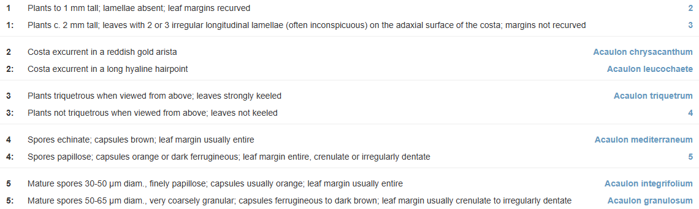
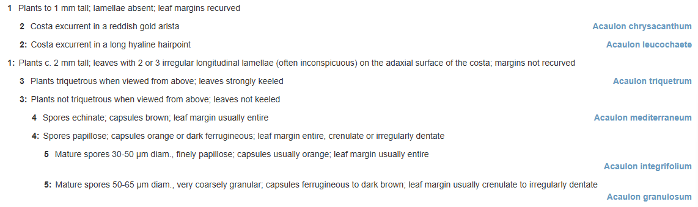

Processing keys
Anatomy of an identification key
The pathway keys—or dichotomous keys—that are managed in KeyBase, and have been published in the literature for the last 200 years or so, come in two main forms, both of which can be reproduced by KeyBase.
Most keys in the literature, at least the botanical literature, are bracketed keys (figure 1). In a bracketed key the key is divided in couplets, each couplet having two leads. Each lead starts with the number of the couplet, followed by a statement and then by either the number of the next couplet to go to or the result of the identification.

Figure 1. Bracketed key from KeyBase (2025). Flora of Victoria: Key to Acaulon species. <https://keybase.rbg.vic.gov.au/keys/show/12181> [Seen: 24-05-2025]. https://keybase.rbg.vic.gov.au/keys/show/12181?mode=bracketed
Another often-used format is the indented key (figure 2). In an indented key the next couplet a lead leads to follows immediately below the lead. Because of this it is not necessary to show the number of the next couplet. In fact couplet numbers are not necessary at all, as the indentation takes care of that. However, larger keys become hard to follow without the numbers or even with the numbers. Therefore, for larger keys the bracketed format is the better format (but this is subject to personal opinion).

Figure 2. Same key as in figure 1 displayed as an indented key. https://keybase.rbg.vic.gov.au/keys/show/12181?mode=indented
Keys can be represented as the decision tree in figure 3. The graph in figure 3 has the structure of the key in figures 1 and 2, but the taxon names have been replaced by numbered item labels and the statements of the leads are not shown.

Figure 3. Graph of key in figures 1 and 2. In this graph the circles are couplets, arrows are leads and rectangles are the keyed out items (identification results).
A key is a graph, but the vertices and edges in this graph are not the nodes and
relationships of graph databases. All the data is in the leads and the vertices
are not so much entities as branching points. So, in KeyBase, the leads are the
entities and are stored as records. Leads (Lead records) are linked through the
parent (parent_id in the database) property (figure 4B). Couplets, in
KeyBase, are data constructs, i.e. sets of (almost always two) leads with the
same parent.

Figure 4. Conversion of decision tree to graph of leads that is stored in KeyBase.
If we split the graph into couplets (figure 5) we can see that a lead either has an item or is the parent of another couplet of leads. There are a few exceptions to this rule as will be discussed, but KeyBase has gotten by very well for 15 years without implementing these exceptions.

Figure 5. Bracketed key in the KeyBase data model, showing couplets.
While the bracketed key format lends itself better for exchange and dissemination, the indented format (figure 6) is closer to the way the key is stored in the database and might be better for illustrating what is going on.

Figure 6. Indented key in the KeyBase data model, showing nested sets.
The boxes outlined with a broken line in figure 6 are nested sets. Nested sets
can be stored in the database by storing the numbers in the top- and
bottom-right corners of the boxes as left and right. KeyBase currently still
stores the nested sets in the database, but for the last ten years, nested sets
have been created by the plugin, so it is not necessary to store them in the
database anymore. This makes KeyBase more flexible in what it can do with keys.
Nested sets are used in the KeyBase player to get the remaining and discarded
items. So, for couplet 3 in figure 6 remaining items are the items on the
leads of which the value of left is between 8 and 21 and the discarded items
are items on the leads where the value of left is outside this range. Nested
sets also make the filters work.
The bracketed format lends itself very well to exchange as tabular data (table 1), which is why CSV is the preferred format for importing and exporting keys in KeyBase. From now on KeyBase will only support tabular data, which can be CSV or Excel. KeyBase used to support two XML formats, SDD and LPXK, but other applications that people stopped using when KeyBase came onto the scene are needed to produce data in these formats, so they are used very little.
Table 1. Key from figures 1 and 2 as tabular data 1.
| from | statement | to |
|---|---|---|
| 1 | Plants to 1 mm tall; lamellae absent; leaf margins recurved | 2 |
| 1 | Plants c. 2 mm tall; leaves with 2 or 3 irregular longitudinal lamellae (often inconspicuous) on the adaxial surface of the costa; margins not recurved | 3 |
| 2 | Costa excurrent in a reddish gold arista | Acaulon chrysacanthum |
| 2 | Costa excurrent in a long hyaline hair-point | Acaulon leucochaete |
| 3 | Plants triquetrous when viewed from above; leaves strongly keeled | Acaulon triquetrum |
| 3 | Plants not triquetrous when viewed from above; leaves not keeled | 4 |
| 4 | Spores echinate; capsules brown; leaf margin usually entire | Acaulon mediterraneum |
| 4 | Spores papillose; capsules orange or dark ferrugineous; leaf margin entire, crenulate or irregularly dentate | 5 |
| 5 | Mature spores 30-50 µm diam., finely papillose; capsules usually orange; leaf margin usually entire | Acaulon integrifolium |
| 5 | Mature spores 50-65 µm diam., very coarsely granular; capsules ferrugineous to dark brown; leaf margin usually crenulate to irregularly dentate | Acaulon granulosum |
In its simplest (and most common) form, the CSV for a key will have three
columns, from, statement and to. Note that currently the CSV files that
can be imported into and exported from KeyBase do not have column headers. In
the new version the exports will have column headers but a large part of the
imported files will not, so a script that deals with the uploaded files will
need to check whether there are column headers or not (just by checking if the
first value in the first row is numeric or not) and, if there are not, add the
three abovementioned column headers.
When the CSV file has been processed you end up with a collection like below (I think KeyBase might ship the data between the frontend and backend as JSON, but I am not sure).
$inKey = collect([
[
"from" => 1,
"text" => "Plants to 1 mm tall; lamellae absent; leaf margins recurved",
"to" => 2,
],
[
"from" => 1,
"text" => "Plants c. 2 mm tall; leaves with 2 or 3 irregular longitudinal lamellae (often inconspicuous) on the adaxial surface of the costa; margins not recurved",
"to" => 3,
],
...,
[
"from" => 5,
"text" => "Mature spores 30-50 µm diam., finely papillose; capsules usually orange; leaf margin usually entire",
"to" => "Acaulon integrifolium",
],
[
"from" => 5,
"text" => "Mature spores 50-65 µm diam., very coarsely granular; capsules ferrugineous to dark brown; leaf margin usually crenulate to irregularly dentate",
"to" => "Acaulon granulosum",
],
])
Before the validation and uploading of the key, we create arrays with the values of the ‘from’ and ‘to’ columns (you do not have to do that, but it is how I did it).
> $from = $inKey->map(fn ($lead) => $lead['from']);
= Illuminate\Support\Collection {#5180
all: [
1,
1,
2,
2,
3,
3,
4,
4,
5,
5,
],
}
> $to = $inKey->map(fn ($lead) => $lead['to']);
= Illuminate\Support\Collection {#5237
all: [
2,
3,
"Acaulon chrysacanthum",
"Acaulon leucochaete",
"Acaulon triquetrum",
4,
"Acaulon mediterraneum",
5,
"Acaulon integrifolium",
"Acaulon granulosum",
],
}
The array for the ‘to’ column needs to be split into couplets and items. KeyBase uses the convention that couplet indexes are always numeric (in literature sometimes letters or roman numerals are used), so the numbers are couplets and the strings items.
> $toCouplets = $to->filter(fn ($item) => is_numeric($item));
= Illuminate\Support\Collection {#5210
all: [
0 => 2,
1 => 3,
5 => 4,
7 => 5,
]
}
> $toItems = $to->filter(fn ($item) => !is_numeric($item));
= Illuminate\Support\Collection {#5241
all: [
2 => "Acaulon chrysacanthum",
3 => "Acaulon leucochaete",
4 => "Acaulon triquetrum",
6 => "Acaulon mediterraneum",
8 => "Acaulon integrifolium",
9 => "Acaulon granulosum",
]
}
Things to look out for
There are (quite) a few exceptions from the ideal key structure illustrated above that we need to look out for when validating keys and for some that are not errors also when uploading the keys. They are reported back to the user with the standard debug messages ‘Error’, ‘Warning’ and ‘Info’.
Errors break the key, so keys with errors will not be uploaded. Warnings do not break the tree but are not good practice and might not have been the intention of the user, so we let the user decide. If there are no debug messages to report, the key can just be uploaded without further feedback from the user. Currently the first screen only reports which delimiter was used. I think we can skip that as well.
Singletons

Figure 7. Graph of key with singleton couplet. [Example CSV import]
Couplets with a single lead serve no purpose in the key and are errors. They might also interfere with the rendering of the key later on, as they are not expected.
To find singletons in a key:
> $singletons = $from->countBy()->filter(fn ($value) => $value == 1)->keys()->all();
= [
6,
]
To check if a lead is a singleton:
$isSingleton = $from->filter(fn ($value) => $value == $inKey[$i$]['from'])->count() == 1
Polytomies

Figure 8. Graph of key with polytomy. [Example CSV import]
Polytomies, i.e. couplets with more than two leads, are harmless, but they are not considered good practice and they may have gone into or been left in the key by accident, so we issue a warning.
To find polytomies in a key:
> $polytomies = $from->countBy()->filter(fn ($value) => $value > 2)->keys()->all();
= [
5,
]
To check if a lead with index $i is part of a polytomy:
$isPolytomy = $from->filter(fn ($value) => $value == $inKey[$i]['from'])->count() > 2;
Orphans

Figure 9. Graph of key with orphan couplet. [Example CSV import]
Orphans are couplets, except the first couplets, that are not in the ‘to’ column, so people using the key cannot get to them.
To find orphans in a key:
> $orphans = $from->unique()->diff($toCouplets)->slice(1)->all();
= [
6,
]
To check if a lead with index $i is an orphan:
$isOrphan = $toCouplets->doesntContain($inKey[$i]['from']);
Dead ends

Figure 10. Graph of key with dead end. [Example CSV import]
Dead ends are the opposite of orphans. They are couplet numbers in the ‘to’ column without couplets. They are mostly the result of typos (as are orphans).
To find dead ends in a key:
> $deadEnds = $toCouplets->diff($from)->all();
= [
7,
]
To check if a lead is a dead end:
$isDeadEnd = $toCouplets->contains($inKey[$i]['to']) && $from->doesntContain($inKey[$i]['to']);
Loops

Figure 11. Graph of key with loop. [Example CSV import]
Loops are created when a lead points back to a couplet that is on the path already taken. Loops are the biggest problem when uploading a key, as new leads are created until the system has run out of memory, and they are also the hardest to find, as one has to traverse the key to find them.
class ErrorCheckService extends Service {
private $from;
private $to;
private $loops;
public function __construct($inKey)
{
$this->from = $inKey->map(fn ($lead) => $lead['from']);
$this->to = $inKey->map(fn ($lead) => $lead['to']);
}
public function checkForLoops()
{
$this->loops = collect([]);
$this->traverseKey(collect([]), $this->from[0]);
return $this->loops;
}
private function traverseKey($path, $couplet)
{
$path->push($couplet);
foreach ($this->from->filter(fn ($value) => $value == $couplet)->keys() as $lead) {
$goTo = $this->to[$lead];
if ($goTo) { // not an orphan
if ($this->from->contains($goTo)) { // goTo is a couplet (not an item)
if ($path->contains($goTo)) { // goTo is on path: append to loops array
$this->loops->put($lead, $goTo);
}
else { // goTo is not on path: go to next couplet
$this->traverseKey($path, $goTo);
}
}
}
}
}
}
$service = new ErrorCheckService($inkey)
To check for loops in a key:
> $loops = $service->checkForLoops();
= Illuminate\Support\Collection {#5307
all: [
7 => 6,
]
}
To check if a lead with index $i creates a loop:
$isLoop = $loops->get($i);
Reticulations

Figure 12. Graph of key with reticulation. [Example CSV import]
Reticulations are created when multiple leads go to the same couplet. Reticulations do no harm but, if ignored, lead to a different key than the user expects, so we need to catch them and deal with them properly.
There are two ways of dealing with reticulations. One is repeating the sub-graph as many times as needed to repair the tree structure (figure 13). This is what KeyBase does now and is the same as not dealing with reticulations.

Figure 13. Graph of key with reticulation resolved by repeating the subgraph.
Possibly a better way of dealing with reticulations is starting a new graph
(figure 14). This involves creating a new root lead that the leads leading
to the couplet link to with the reticulation (reticulation_id in the
database) property. So this is one of the exceptions to the rule that leads
either have an item or are the parent of another set of leads.

Figure 14. Graph of key with reticulation resolved by starting a new graph.
Reticulations when dealt with this way will cause problems later on, as keys with reticulations cannot be displayed as indented keys and for that reason will also not be able to be edited when KeyBase gets a key editor. For this reason, we will not treat reticulations as a feature and will keep ironing out reticulations and warn people about them like KeyBase has always done.
This will find reticulations in a key:
> $reticulations = $toCouplets->countBy()->filter(fn ($value) => $value > 1)->keys()->all();
= [
2,
]
To check if a lead with index $i is in a reticulation:
$isReticulation = $toCouplets->contain$($inKey[$i]['to']) && !$toCouplets->containsOneItem(fn ($value) => $value == $inKey[$i]['to']);
Examples
Subkeys

Figure 15. Key with subkeys.
Large keys, of which we have quite a few in KeyBase, are often split into smaller subkeys (figure 15). Currently KeyBase does not deal with subkeys, but merging subkeys into one big key is the largest (and perhaps only) source of reticulations, so it is a high priority for me to fix this in the new version. Subkeys are much more straightforward to deal with than and are much preferable to reticulations and if KeyBase can deal with subkeys, we might not need special treatment for reticulations.
CSV files for keys with subkeys need a fourth ‘subkey’ column. Therefore they need to have a header row, otherwise KeyBase will ignore this column.
To find subkeys in a key:
> $hasSubkeys = $inKey->filter(fn ($lead) => isset($lead['subkey']))->count() ? true : false;
= true
> $subkeys = $inkey->map(fn ($lead) => $lead['subkey'])->unique()->values();
= Illuminate\Support\Collection {#5102
all: [
"Subkey 1",
"Subkey 2",
"Subkey 3",
]
}
If a key has subkeys, it needs to be split up into a main key and subkeys:
$inKeys = $inKey->groupBy('subkey');
$subkeys = $inKeys-keys();
// or strictly speaking:
// $subkeys = $inKeys->keys()->slice(1);
Everything else can then be done in the foreach loop:
foreach ($inKeys as $subkey => $inKey) {
//
}
In the main key ($inKeys['']), non-numeric values in the $to collection can be either
subkeys or items:
> $to = $inKeys['']->map(fn ($lead) => $lead['to']);
= Illuminate\Support\Collection {#5217
all: [
"Subkey 1",
2,
"Subkey 2",
"Subkey 3",
]
}
> $toItems = $to->filter(fn ($item) => !is_numeric($item))->diff($subkeys);
= Illuminate\Support\Collection {5281
all: []
To check if a lead with index $i goes to a subkey:
$hasSubkey = $subkeys->filter(fn ($value) => $value == $inKeys[''][$i]['to'])->count() > 0;
Examples
- Example CSV of key with subkeys
- Jepson Flora – Key to the families, https://keybase.rbg.vic.gov.au/keys/show/3854
- Jepson Flora – Key to the genera of Brassicaceae, https://keybase.rbg.vic.gov.au/keys/show/10032
- Horticultural Flora of South-eastern Australia: Key to the species of Eucalyptus, https://keybase.rbg.vic.gov.au/keys/show/7394
- Eucalypts of North Coast New South Wales: Key to the species of Eucalyptus, https://keybase.rbg.vic.gov.au/keys/show/13167
Unreachable subkeys
If there are subkeys in a key, there should also be a test for subkeys that do not key out in the main key:
$unreachableSubkeys = $subkeys->diff($to);
The inverse situation, i.e., subkeys that key out in the main key but that are not there, is theoretically possible but will not be recognised, as these subkeys will be considered items.
Shortcuts
Sometimes, an item that keys out only has a single member (in the project), so there will not be a key for this item. However, this member itself can have multiple members, so can have a key to its members. In order to still be able to link this key to the present key, KeyBase has a data structure we call a ‘shortcut’ (from now on). A shortcut is a lead with an item. The parent of the shortcut is the lead with the keyed-out item (figure 16).

Figure 16. Couplet with keyed out item Senegalia and a shortcut to Senegalia greggii in KeyBase (2025), Vascular plants of California: Jepson Herbarium, UC Berkeley: Fabaceae Group 1. <https://keybase.rbg.vic.gov.au/keys/show/10038> [Seen: 26-05-2025].
Shortcuts can currently be provided in the input file by appending a colon (’:’)
and an item name, optionally separated by a space, e.g. :Senegalia greggii,
or by appending an item enclosed in braces (’{’ and ‘}’), e.g. {Senegalia greggii}. In the new version, now that we can have column headers, it can be
delivered in a shortcut column. We’ll have to see if we still need to support
the old constructs.
To check if there are any shortcuts in a provided key, you can run:
// $shortcuts = $toItems->filter(fn ($value) => substr_count($value, ':'))
// ->map(fn ($value) => preg_split('/ ?: ?/', $value)[1]);
$shortcuts = $inKey->filter(fn ($lead) => $lead['shortcut'])->map(fn ($lead) => $lead['shortcut']);
And for a single lead:
// $hasShortcut = $substr_count($inKey[$i]['to'], ':') > 0;
$hasShortcut = !empty($inKey[$i]['shortcut']);
Examples:
- Flora of Victoria: Key to the families of Monocotyledons, https://keybase.rbg.vic.gov.au/keys/show/1906
- Flora of Victoria: Key to the genera of Aizoaceae, https://keybase.rbg.vic.gov.au/keys/show/2185
Shortcuts already in key
Shortcuts to items that are already keyed out in the key will cause problems later, as they will create a loop, so need to be caught before the key is uploaded.
To find any spurious shortcuts in a key:
$spuriousShortcuts = $shortcuts->filter(fn ($shortcut) => $toItems->contains($shortcut));
For a single lead with index $i:
$hasSpuriousShortcut = $hasShortcut && $toItems->contains(preg_split('/ ?: ?/', $inKey[$i]['to'])[1]);
Chained shortcuts
There are a few instances in KeyBase where people have tried to chain shortcuts. While chained shortcuts do not break anything, KeyBase does not treat them as shortcuts but will export and display them as extra leads (which is what they are), which is not what the author of the key intended and will confuse other users. Also, shortcuts are meant to connect keys, not link extra items to keys (I did call them linked items before, which might have given people that idea).
So, from now on, we will report chained shortcuts as errors.
To find chained shortcuts in a provided key, you can run:
// $chainedShortcuts = $toItems->filter(fn ($value) => substr_count($value, ':') > 1)->all();
And for a single lead:
// $hasChainedShortcut = substr_count($lead['to'], ':') > 1 ? true : false;
Multi-item shortcuts
Some keys in KeyBase have shortcuts with what are meant to be multiple items.
This may look like Campanulaceae: Githopsis, Heterocodon, Triodanis. KeyBase
has never been able to process this properly and we are not going to change
that, as it is inappropriate use of shortcuts. We are not even going to have a
warning for it, i.e. we are going to treat it as a shortcut with a single
item, but we will put something in the documentation.
Multi-item leads
The new version of KeyBase will support unfinished keys. Multiple item labels,
separated by the pipe (’|’) character, e.g. Corymbia|Blakella, added in
the same cell in the ‘to’ column in an import file, will be interpreted and
treated as multiple items coming from the same lead (figure 17).

Figure 17. Key that is not fully resolved: lead 6 leads to more than one
item.
To find multi-items in a key:
> $multiItems = $toItems->filter(fn ($value) => count(preg_split('/ ?\| ?/', $value)) > 1)->all();
= [
11 => "Corymbia|Blakella"
]
To check if a lead has a multi-item:
$hasMultiItem = count(preg_split('/ ?\| ?/', $inKey[$i]['to']) > 1;
Once KeyBase has its own key editor, it will be possible to assign items to a key that do not key out at all. This cannot be done with CSV key imports, of course.
Note that the old plugin that KeyBase will keep supporting does not support multiple items keying out in the same place, so for the old API we need to merge them into a single item.
Examples
Processing key files
Processing of uploaded key files takes three steps:
-
Processing the uploaded CSV file
This involves detecting the delimiter and the header. I found a nice method for detecting CSV delimiters on Stack Overflow, which I have turned into a class. Take it or leave it.
-
Validating the key
This involves doing all the tests discussed above. The script that does it now can be found at ErrorCheckService. I think it would be nice to have classes for each of the types of errors/features, but I will leave that to you.
-
Uploading the key
I still kind of like how it is done now: KeyUploadService, so I will have a look at modernising this script.